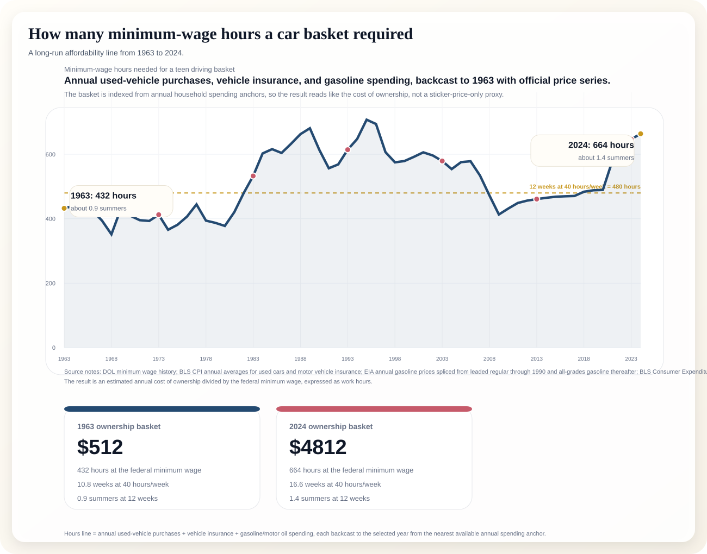

This package turns the federal minimum wage into hours of work required for a representative annual driving basket: used-vehicle purchases, vehicle insurance, and gasoline / motor oil. The long-run series is backcast from annual spending anchors using the relevant official price indexes, so the line is about ownership cost, not just sticker price.
The selected-year dots are the story points: 1963, 1973, 1983, 1993, 2003, 2013, 2023, and 2024.

Dollar values are annual spending estimates; hours divide that total by the federal minimum wage.
| Year | Used vehicle purchases | Vehicle insurance | Gasoline / motor oil | Total basket | Hours at min wage | Weeks at 40h | Summer jobs |
|---|---|---|---|---|---|---|---|
| 1963 | $450 | $62 | $0 | $512 | 432 | 10.8 | 0.9 |
| 1973 | $552 | $108 | $0 | $660 | 412 | 10.3 | 0.9 |
| 1983 | $1547 | $237 | $0 | $1784 | 533 | 13.3 | 1.1 |
| 1993 | $2098 | $512 | $0 | $2611 | 614 | 15.4 | 1.3 |
| 2003 | $2239 | $743 | $0 | $2983 | 579 | 14.5 | 1.2 |
| 2013 | $2349 | $991 | $1 | $3341 | 461 | 11.5 | 1.0 |
| 2023 | $2997 | $1693 | $1 | $4690 | 647 | 16.2 | 1.3 |
| 2024 | $2818 | $1993 | $1 | $4812 | 664 | 16.6 | 1.4 |
Used-vehicle purchases are anchored to the BLS Consumer Expenditure annual average for used vehicle purchases. Vehicle insurance is anchored to the BLS annual average vehicle-insurance expenditure. Gasoline / motor oil is anchored to the BLS annual average expenditure series and backcast with EIA leaded regular gasoline prices. The minimum wage uses the DOL history of federal minimum wage changes.